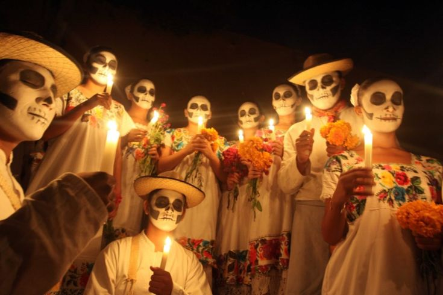

Explora esta página para conocer más sobre una de las tradiciones más importantes de México, una festividad llena de colores, sabores, y sentimientos que reúne a las familias para recordar y celebrar la vida de los seres queridos que ya no están.
¿Qué es el Día de Muertos?
El Día de Muertos es una festividad mexicana que celebra la vida y la memoria de los seres queridos que han fallecido. Esta celebración tiene lugar el 1 y 2 de noviembre, coincidiendo con el Día de Todos los Santos y el Día de los Fieles Difuntos de la tradición católica. Durante estos días, las familias montan altares y visitan las tumbas de sus difuntos para decorar con flores de cempasúchil, calaveras de azúcar y fotos familiares, en un acto de amor y recuerdo.
Más allá de una celebración solemne, el Día de Muertos es una fiesta colorida y alegre que busca honrar la vida de quienes ya no están, recordando que la muerte es solo una parte del ciclo de la existencia.
Origen del Día de Muertos
La tradición del Día de Muertos tiene sus raíces en las antiguas civilizaciones de México, como los aztecas, mayas y purépechas, quienes realizaban rituales para honrar a los muertos desde hace más de 3,000 años. Estos rituales fueron evolucionando a lo largo del tiempo, integrándose con el catolicismo durante la colonización española, resultando en una mezcla de costumbres indígenas y creencias católicas que dio origen al Día de Muertos moderno.
En el México prehispánico, la muerte no era vista como el final de la vida, sino como una transición a otra forma de existencia. Los muertos iban a un lugar especial y se creía que podían regresar temporalmente al mundo de los vivos, motivo por el cual se les ofrecía comida y bebidas para su viaje.

Altares de Muertos
Los altares de muertos son una de las manifestaciones más representativas del Día de Muertos. Estos altares se montan en los hogares o en lugares públicos y están decorados con diversos elementos que tienen un simbolismo especial, como:
Velas: Representan la luz que guía a los espíritus en su regreso.
Cempasúchil: Esta flor, también llamada "flor de veinte pétalos", simboliza la brevedad de la vida y su aroma guía a los espíritus hacia el altar.
Calaveras de azúcar: Representan a los difuntos y se utilizan para recordar a las personas que han fallecido de una manera amigable.
Pan de muerto: Un alimento tradicional que simboliza el ciclo de la vida y la muerte.
Objetos personales: Se colocan objetos que pertenecieron al difunto para recordar su personalidad y gustos.
Cada uno de estos elementos tiene un significado profundo y juntos crean un ambiente especial que recuerda a los seres queridos.
Acerca de
Esta página ha sido creada para compartir la importancia de esta hermosa tradición mexicana y para fomentar el respeto hacia las costumbres que celebran la vida y recuerdan la muerte como un proceso natural. Nuestro objetivo es que más personas, tanto en México como en el mundo, conozcan y aprecien esta celebración tan especial.
El Día de Muertos ha sido reconocido por la UNESCO como Patrimonio Cultural Inmaterial de la Humanidad, y cada año millones de personas se unen en esta celebración para recordar que, aunque físicamente ya no estén, los seres queridos viven en la memoria de quienes los amaron.


 — Forrest Glover Design Custom Drapery Manufacturing and Interior Design Trend Forcasting.jpeg)